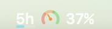

macOS menu bar for Codex users
CodexGlance
Codex usage, at a glance.
A tiny app for people who only want to know how much Codex usage is left, without opening another panel.

Actual rendering
Actual menu bar drawing, enlarged.
The enlarged view uses the same gauge model as the app: 210 degree start, 240 degree sweep, and a needle mapped to the remaining percentage.
Default view
Current window first. Weekly only when needed.
CodexGlance opens with the 5-hour window only. Weekly usage can be added from the menu when it matters.
The number is remaining percentage, matching Codex's Usage remaining panel.
Keep it hidden by default, then turn it on from the menu when you want the broader limit.
Install
For non-technical users.
No terminal required. Download the app, unzip it, move it to Applications, then right-click Open the first time because the app is currently unsigned.
-
Download
Get
CodexGlance.app.zipfrom GitHub Releases. -
Move
Unzip it and drag
CodexGlance.appinto Applications. -
Open once
Right-click
CodexGlance.app, choose Open, then confirm Open. - Glance Codex usage appears in the macOS menu bar.